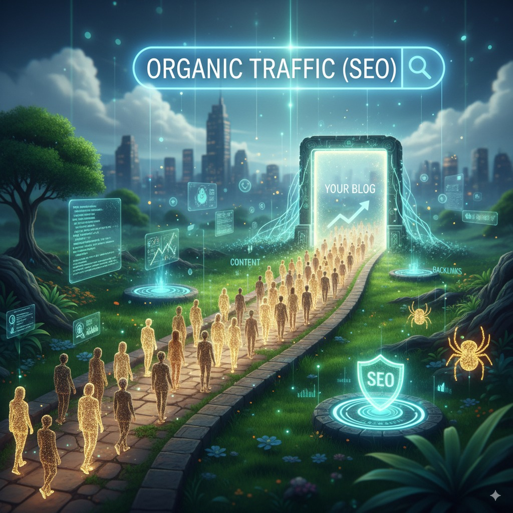

Alerta de Realidade 2026
Ferramentas de IA são commodities. A vantagem competitiva agora é a estratégia humana amplificada por agentes autônomos. Se você apenas "usa o ChatGPT", já está atrasado. Este guia é sobre integração profunda e resultados preditivos.
O Novo Marketing Digital
imagem gerada po IA google geminiComo lucrar na era da IA Generativa
Em sua essência, Marketing Digital é o conjunto de atividades que uma empresa (ou pessoa) executa online com o objetivo de atrair novos negócios, criar relacionamentos e desenvolver uma identidade de marca. É a arte de conectar-se com o público certo, no lugar certo e na hora certa.
No entanto, o Marketing Digital em 2026 evoluiu drasticamente. Não se trata apenas de atrair cliques, mas de influenciar os mecanismos de resposta gerados por IA (SearchGPT, Gemini, Perplexity) e criar experiências hiper-personalizadas em tempo real. O funil linear morreu; bem-vindo ao "Flywheel" impulsionado por dados.
A revolução agora é a "Agentic AI" (IA Agêntica): softwares que não apenas criam texto, mas executam ações, enviam e-mails, ajustam orçamentos de anúncios e atendem clientes de forma autônoma.
Pilares do Sucesso em 2026
- De SEO para AIO/GEO: Otimize seu conteúdo para ser a "resposta única" das IAs, não apenas um link azul na lista.
- Comunidade > Audiência: Em um mar de conteúdo gerado por bots, a conexão humana real em comunidades privadas vale ouro.
- Agentes Autônomos: Use "funcionários digitais" para prospectar e qualificar leads 24/7 enquanto você foca na estratégia.
- Hiper-Personalização: Dados em tempo real moldam a oferta para cada indivíduo. O "one-size-fits-all" acabou.
Módulo 1: Mentalidade "AI-First"
imagem gerada po IA google geminiO Novo Mindset do Profissional
Em 2026, a mentalidade mudou de "fazer tudo" para "orquestrar tudo". Você não é mais o operário; você é o piloto da IA.
- Curadoria > Criação: A IA cria o volume; você cura a qualidade e injeta a alma e a estratégia. A habilidade número 1 é o discernimento.
- Adaptabilidade Radical: As ferramentas mudam toda semana. O profissional de sucesso não se apega a plataformas, mas a princípios fundamentais de psicologia humana.
- Data-Driven Intuition: Usar dados para informar a intuição, não para substituí-la. A empatia humana é o único diferencial que a IA ainda não replicou perfeitamente.
Módulo 2: Fundamentos Preditivos
imagem gerada po IA google geminiAntes de automatizar, você precisa entender quem está do outro lado. Mas agora, temos ferramentas para prever comportamentos.
2.1. Personas Sintéticas e JTBD
Não adivinhe sua persona. Crie Personas Sintéticas usando IA. Alimente o modelo com dados de reviews, fóruns e entrevistas, e converse com essa "pessoa virtual" para validar suas ofertas antes de gastar um centavo.
Exemplo: Use o ChatGPT para simular um cliente cético de 35 anos e tente vender seu produto para ele. As objeções geradas serão a base da sua copy.
Passo a Passo: Simulando seu Cliente Ideal
- Coleta de Dados Reais: Copie 50 reviews de produtos concorrentes (dores reais).
- Criação do Avatar: Peça à IA: "Aja como [Nome], baseado nestes reviews. Quais são seus 3 maiores medos ao comprar [Produto]?".
- Teste de Oferta: Apresente sua promessa e peça para o Avatar criticar honestamente.
- Refinamento: Ajuste sua oferta até que o Avatar Sintético esteja "convencido".
2.2. Proposta Única de Valor Dinâmica
Sua PUV deve se adaptar. Para um cliente focado em preço, seu site destaca economia. Para um focado em status, destaca exclusividade. Ferramentas modernas permitem que sua landing page mude o texto baseada na origem do tráfego.
Ferramentas Estratégicas:
Use o ChatGPT Plus para criar personas sintéticas e o Value Proposition Canvas para alinhar dores e ganhos.
Módulo 3: Copywriting Híbrido (Humano + IA)
imagem gerada po IA google gemini3.1. A Morte da Copy Genérica
Textos com "cheiro de IA" não convertem mais. O segredo de 2026 é usar a IA para estrutura e criatividade, mas escrever com vulnerabilidade e histórias pessoais (elementos que a IA ainda simula mal).
- Storytelling de Dados: Use fatos para ancorar a emoção.
- Frameworks Clássicos, Velocidade Moderna: AIDA e PAS ainda funcionam, mas agora você pode testar 50 variações de uma headline em minutos.
- Micro-Copy de Conversão: O texto nos botões, nos erros de formulário, nos pop-ups. É onde a batalha da conversão é ganha.
3.2. Conteúdo Pilar e Remixagem
Crie um vídeo denso no YouTube (Conteúdo Pilar). Use IA para extrair: 5 Reels, 3 Threads no Twitter, 1 Artigo de Blog e 2 Newsletters. Isso é Remixagem de Conteúdo. Você trabalha uma vez e a máquina distribui em todos os formatos.
Ferramenta: Gerador de Copy AIDA
Aplique o que aprendeu! Preencha os campos abaixo e crie uma copy de vendas persuasiva em segundos.
Módulo 4: Tráfego Orgânico (SEO & AIO/GEO)
 imagem gerada po IA google geminiO SEO tradicional evoluiu para GEO (Generative Engine Optimization) e AIO (Artificial Intelligence Optimization). O objetivo não é apenas o Google, mas ser a fonte citada pelo ChatGPT, Perplexity e Gemini.
4.1. Otimizando para Respostas de IA
Para ser citado por IAs, seu conteúdo precisa demonstrar autoridade inquestionável e estrutura clara.
Como rankear na Era Generativa:
- Citações e Dados Próprios: IAs priorizam conteúdo que traz dados originais e estatísticas. Faça suas próprias pesquisas.
- Estrutura de Perguntas e Respostas: Use títulos claros (H2, H3) que respondem perguntas diretas. Isso facilita a "leitura" pelos modelos de linguagem.
- Autoridade (Digital PR): Menções da sua marca em outros sites de alta relevância são o sinal #1 de confiança para as IAs.
- E-E-A-T Máximo: Experiência é rei. Vídeos demonstrando o uso do produto valem mais que mil palavras genéricas.
Passo a Passo: Domine a Cauda Longa Conversacional
- Pense em Conversas, não Keywords: As pessoas agora perguntam: "Ei Google, planeje uma viagem barata para Bali". Otimize para frases naturais e complexas.
- Expansão com IA: Use o Perplexity para ver quais fontes ele usa para responder perguntas do seu nicho. Analise esses competidores.
- Atualização Constante: Conteúdo fresco ganha preferência. Atualize seus posts antigos com dados de 2026.
Ferramentas de GEO/SEO:
Perplexity AI: Para entender como as IAs respondem. AnswerThePublic: Para intenção de busca humana. Google Search Console: Monitoramento técnico essencial.
4.2. Topic Clusters e Autoridade
Organize seu site em "clusters" de tópicos. Uma página pilar (como esta) linkando para artigos satélites específicos. Isso cria uma teia semântica que prova para os algoritmos que você é um especialista no assunto.
Dica de Renda Extra: Crie "micro-blogs" de nicho ultra-específicos (ex: "acessórios para setup de home office branco") e monetize com afiliados. Nichos pequenos são mais fáceis de dominar no GEO.
Dica de Especialista:
Adicione uma seção de "Resumo Rápido" ou "TL;DR" no topo dos seus artigos. IAs adoram usar esses resumos para gerar suas respostas rápidas.
Otimização Visual (VSO)
& Dominância no Pinterest
Em 2026, 40% das jornadas de compra começam com uma imagem. Se o seu conteúdo não é "vísivel" para o Google Lens e Pinterest, você está ignorando metade do tráfego qualificado.
O Efeito Pinterest
O Pinterest não é uma rede social, é um Mecanismo de Busca Visual. Para ativar o algoritmo em 2026, seus Pins precisam seguir a "Regra dos 3 Segundos":
- Formato Vertical (2:3): Domine a tela do mobile. Pins quadrados são ignorados.
- Texto Sobreposto (Overlay): O OCR do algoritmo lê o texto na imagem. Use palavras-chave grandes e contrastantes.
- Consistência Visual: Use sempre a mesma paleta de cores para criar branding instantâneo no feed.
Google Lens & SEO
Como aparecer quando um cliente aponta a câmera do celular para um produto físico semelhante ao seu?
Nomenclatura Descritiva
Nunca use IMG_592.jpg. Use tenis-corrida-azul-performance.webp.
Alt Text Contextual
Descreva a ação e o contexto, não apenas keywords soltas.
Next-Gen Formats
Use WebP ou AVIF. Imagens pesadas são penalizadas na busca visual.
Hack de Crescimento Pinterest 2026
Crie "Infográficos Longos" que resumem este guia. O Pinterest prioriza conteúdo salvável. O Segredo: No rodapé da imagem, coloque uma seta e o texto "Toque para ler o guia completo". Isso aumenta o CTR para seu blog em até 300%.
Renda Extra com Agentes de IA e Automação
imagem gerada po IA google geminiA renda extra em 2026 não é sobre "clicar em anúncios", é sobre configurar sistemas. Você pode ser o arquiteto de agentes que trabalham para você.
Oportunidades Reais para Iniciantes:
- Operador de Agentes de IA: Configure chatbots de atendimento para pequenos negócios locais (padarias, dentistas). Eles pagam mensalidade para ter um "atendente" 24h no WhatsApp.
- Criador de Conteúdo Faceless (Sem Rosto): Use IA para gerar roteiros, vozes e vídeos para canais de TikTok/Shorts de nicho (curiosidades, motivação, finanças) e monetize com views e afiliados.
- Curadoria de Newsletters: Use IA para resumir as notícias da semana de um setor específico e venda assinaturas ou espaços publicitários.
⚡ Tutorial Rápido: Agente de Suporte Básico
- 1 Crie uma conta gratuita no Make.com (antigo Integromat).
- 2 Conecte o módulo "OpenAI (ChatGPT)" com o módulo "Gmail" ou "Telegram".
- 3 No Prompt do sistema, escreva: "Você é um assistente de suporte útil. Responda a este e-mail de forma educada e sugira agendar uma reunião se a dúvida for complexa."
- 4 Ative o cenário. Agora você tem um funcionário digital trabalhando de graça.
Para aprofundar, veja também nosso conteúdo sobre renda extra com marketing digital .
Módulo 5: Tráfego Pago & Preditivo
 imagem gerada po IA google gemini
imagem gerada po IA google gemini
O tráfego pago agora é dominado por algoritmos "Black Box" como o Performance Max (Google) e Advantage+ (Meta). O segredo não é mais a segmentação manual, mas a qualidade do Criativo.
A Batalha dos Algoritmos
| Característica | Google PMax (Performance Max) | Meta Advantage+ |
|---|---|---|
| Foco | Todo o inventário Google (YouTube, Search, Discover) | Feed, Stories e Reels (Facebook/Instagram) |
| O Segredo | Sinais de Audiência e Assets de Vídeo de Alta Qualidade | Volume de Criativos (teste 10 variações/semana) |
| Estratégia 2026 | Nutrir o algoritmo com dados de conversão offline (CRM) | UGC (User Generated Content) autêntico |
O Criativo é o Novo Targeting
- Hook (Gancho) Visual: Os primeiros 2 segundos decidem tudo. Use padrões de interrupção visual.
- UGC Nativo: Anúncios que parecem posts de amigos convertem 3x mais. Evite o visual "super produzido" de agência.
- IA Generativa para Variação: Use ferramentas que gravam a sessão do usuário (como Midjourney ou Adobe Firefly) para criar variações infinitas de fundos e cenários para seus produtos.
- Remarketing Dinâmico: Deixe a IA decidir qual produto mostrar para quem abandonou o carrinho.
Módulo 6: O Funil de Vendas Mestre
imagem gerada po IA google geminiDo Funil ao Flywheel
- Topo de Funil (Atração): Vídeos curtos virais (Reels/TikTok) e Artigos Otimizados para GEO. Foco em resolver dores rápidas.
- Meio de Funil (Engajamento): Newsletters e Grupos de WhatsApp. Aqui você constrói confiança. Use "Lead Magnets" como ferramentas gratuitas ou templates.
- Fundo de Funil (Conversão): VSL (Video Sales Letter), Webinars ao vivo e atendimento via Agente de IA para tirar dúvidas finais.
- Pós-Venda (Retenção): Onde o lucro real está. Use automação para upsells e criar defensores da marca.
Módulo 7: E-mail Marketing & Automação
imagem gerada po IA google geminiA Lista é Seu Império
Redes sociais são terreno alugado. O e-mail é sua casa própria. Em 2026, e-mails de text simples (plain text), focados em narrativa e conexão pessoal, superam templates visuais pesados.
Automação Inteligente:
Não envie "blasts" para todos. Use tags comportamentais. Se a pessoa clicou no link sobre "SEO", ela entra em uma sequência específica sobre SEO. Ferramentas modernas permitem que o conteúdo do e-mail mude dinamicamente para cada usuário.
Ferramentas de Automação:
Brevo (Sendinblue): Ótimo custo-benefício. ActiveCampaign: O rei das automações complexas. Beehiiv: Excelente para newsletters focadas em crescimento.
Módulo 8: Social Selling & Chatbots
imagem gerada po IA google geminiConversa é Conversão
O Brasil é o país do WhatsApp. A venda não acontece mais no site, acontece no chat. Use uma abordagem híbrida: Agente de IA para resposta imediata e triagem, Humano para fechamento complexo e relacionamento.
A chave é a velocidade. O lead que recebe resposta em 1 minuto converte 391% mais do que aquele que espera 30 minutos.
Módulo 9: Neuromarketing Aplicado
imagem gerada po IA google geminiA Biologia da Compra
A tecnologia muda, o cérebro humano não. Os gatilhos clássicos continuam poderosos, mas devem ser usados com ética e sutileza.
- Prova Social (Atualizado): Não use apenas "depoimentos". Use prints de conversas reais, vídeos de unboxing e avaliações verificadas. A autenticidade vence a perfeição.
- Escassez Real: "Só até amanhã" funciona, mas "Vagas fecham quando atingirmos a capacidade de suporte" gera mais confiança.
- Autoridade por Associação: Mostre com quem você aprendeu, quem usa seu produto e onde você foi citado.
Módulo 10: CRO & Análise de Dados
imagem gerada po IA google geminiDecisões baseadas em Dados, não em "Achismo"
CRO (Otimização da Taxa de Conversão) é aumentar o dinheiro que entra sem aumentar o tráfego. Uma melhoria de 1% na conversão pode dobrar seu lucro líquido.
A Técnica Mestra: Teste A/B Contínuo
Teste tudo: Headlines, Cores de Botão, Preços e, principalmente, Ofertas. Use ferramentas que gravam a sessão do usuário (como Microsoft Clarity ou Hotjar) para ver onde eles travam e abandonam seu site.
Ferramentas de CRO:
GA4 (Google Analytics 4): Obrigatório. Microsoft Clarity: Gratuito e poderoso para mapas de calor. VWO: Para testes A/B avançados.
Seus Visitantes Não Compram? Transforme Cliques em Clientes.
Atrair tráfego é apenas metade da batalha. Se seus visitantes chegam e vão embora sem comprar, você tem um balde furado. Descubra nosso método para otimizar cada ponto do seu funil e dobrar suas conversões sem gastar um centavo a mais em anúncios.
Quero Otimizar Minhas ConversõesMódulo 11: A Era dos Agentes Autônomos (Agentic AI)
imagem gerada po IA google geminiSua Equipe Digital Infinita
A maior tendência de 2026 não é apenas "gerar texto", é "executar tarefas". Agentes de IA são softwares que perseguem objetivos. Você diz "aumente meus seguidores no LinkedIn interagindo com perfis relevantes" e o agente executa.
- SDRs de IA: Agentes que pesquisam leads, encontram e-mails e enviam mensagens personalizadas de prospecção fria.
- Criadores de Conteúdo Autônomos: Sistemas que leem notícias, escrevem roteiros, geram imagens e agendam posts sem intervenção humana constante.
- Atendimento Nível Humano: Chatbots treinados na sua base de conhecimento que resolvem 80% dos chamados de suporte instantaneamente.
O Futuro é Híbrido
Quem vencerá o jogo não é a IA sozinha, nem o humano sozinho. É o humano que sabe orquestrar um exército de agentes de IA. A produtividade não vai dobrar; ela vai multiplicar por 10x.
Dica para Iniciantes: Comece usando ferramentas "No-Code" (como Make ou Zapier) conectadas ao OpenAI API para criar suas primeiras automações simples. O mercado paga caro por quem sabe construir isso.
5 IAS QUE TODO MUNDO DEVERIA USAR EM 2026 (É LOUCURA IGNORAR)
A teoria é boa, mas ver na prática é melhor. Assista a este vídeo essencial para entender quais ferramentas estão dominando o mercado agora.
👇 Quer dominar essas ferramentas e lucrar com elas?
ACESSAR O MÉTODO COMPLETOTabela Periódica da IA 2026
Salve esta lista. Estas são as ferramentas essenciais validadas para este ano, divididas por categoria.
| Categoria | Ferramenta Principal | Uso Ideal |
|---|---|---|
| Texto & Cérebro | ChatGPT 5 / Claude 3.5 Sonnet | Raciocínio complexo e Copywriting longo. |
| Imagens (VSO) | Midjourney v7 / Ideogram | Criar visuais hiper-realistas e textos dentro da imagem. |
| Vídeo AI | Sora / Runway Gen-3 | Gerar vídeos B-Roll para anúncios sem filmar. |
| Automação | Make.com (Integromat) | Conectar todas as IAs e criar agentes autônomos. |
| Pesquisa | Perplexity Pro | Substituir o Google para pesquisa de mercado profunda. |
Checklist de Ação Rápida 2026
Não se perca na teoria. Execute estes passos para modernizar sua operação de marketing agora.
Comentários da Comunidade
Deixe sua opinião
Participe da conversa usando sua conta do Facebook.